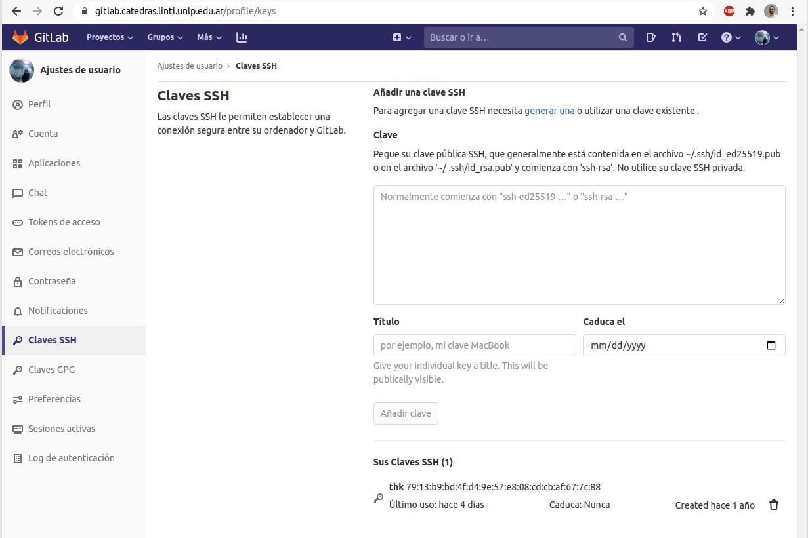

Agregar la clave SSH en Gitlab¶
- Primero necesitamos crear nuestra clave SSH y copiarla en el clipboar. Esto se puede ver en esta guía.
- Luego debe ir al Gitlab de la cátedra https://gitlab.catedras.linti.unlp.edu.ar/ e iniciar sesión.
- Selecciona en tu avatar en la esquina superior derecha y hace click en
Cónfiguración.

- Selecciona Calves SSH.
- Pega la clave pública que copiaste en el paso uno en el textarea.
- Asegurate de incluír un nombre descriptivo a ti clave en el input Título, como PC de casa.
- Opcionalmente se puede poner una fecha de expiración a la clave.
- Selecciona el botón Añadir clave
